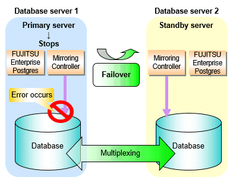
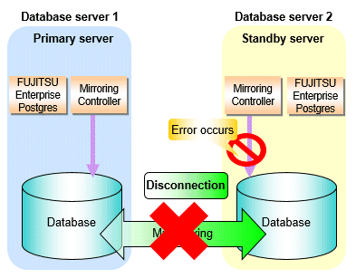
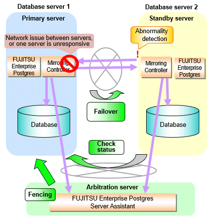
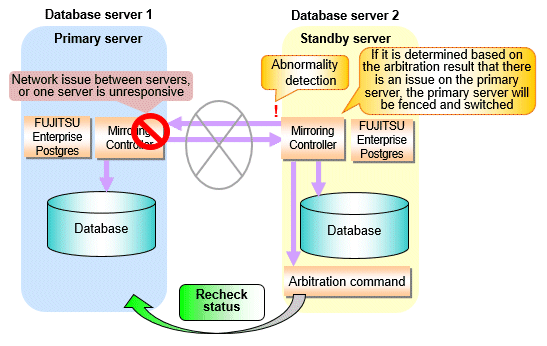

Database multiplexing mode is an operation mode (log shipping mode) based on PostgreSQL streaming replication. Other software such as cluster software is not required.
This mode replicates the database on all servers that comprise the cluster system. It achieves this by transferring the updated transaction logs of the database from the server that receives the updates (primary server) to another server (standby server), and then reflecting them on the standby server. The client driver automatically distinguishes between the primary and standby servers, so applications can be connected transparently regardless of the physical server.
It consists of a feature that detects faults in the elements that are essential for the continuity of the database operation (such as the database process, disk, and network), as well as simplified switchover and standby server disconnection features. Furthermore, referencing can be performed on the standby server. The database will be copied in synchronous mode.
Note
If using WebAdmin or Mirroring Controller, FUJITSU Enterprise Postgres supports cluster systems comprising one primary server and one standby server.
Although it is possible to connect an asynchronous standby server to the cluster system as an additional server, the standby server is not targeted for monitoring by Mirroring Controller.
A synchronous standby server cannot be connected to the cluster system as an additional server.
See
The streaming replication feature is not described in this manual.
Refer to "High Availability, Load Balancing, and Replication" in the PostgreSQL Documentation for information on the streaming replication feature.
Figure 1.1 Failover from the primary server to the standby server

Figure 1.2 Standby server disconnection

Database degradation using the arbitration server
FUJITSU Enterprise Postgres provides the Server Assistant that objectively determines the status of database servers as a third party, and if necessary, isolates affected databases if the database servers are unable to accurately ascertain their mutual statuses in database multiplexing mode, such as due to a network error between database servers, or server instability. Database degradation can be performed by using the server (arbitration server) on which the Server Assistant is installed.
For database degradation using the arbitration server, if the database servers are unable to check their mutual statuses (due to a network error between database servers or server instability), then the database server queries the arbitration server for the status of the other database server. If it is determined based on the heartbeat result that the status is unstable, the applicable database server will be isolated from the cluster system (fencing). The arbitration server periodically heartbeats the database server so that it can respond immediately to queries from the database server. The fencing process can be customized according to the environment where Mirroring Controller is used.
Additionally, the database servers are always performing their heartbeats for the arbitration server so that it can perform check requests any time.
Figure 1.3 Database degradation using the arbitration server

Note
Install the arbitration server on a different physical server to that of the database server. Refer to "1.2 System Configuration for Database Multiplexing Mode" for information on the system configuration when using the arbitration server.
Database degradation using the arbitration command
The arbitration command is a user command that performs arbitration processing in lieu of the arbitration server. If an arbitration server cannot be deployed, arbitration of the database server can be performed using the arbitration command.
Figure 1.4 Database degradation using the arbitration command

See
Refer to "2.6 Creating a User Exit for a Database Server" or "Appendix C User Commands" for information on user commands.